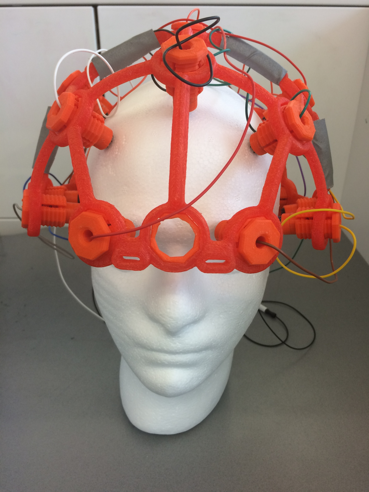
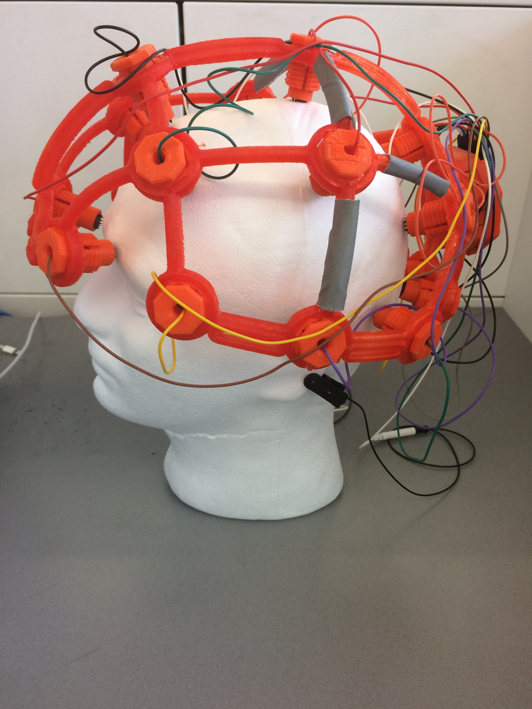
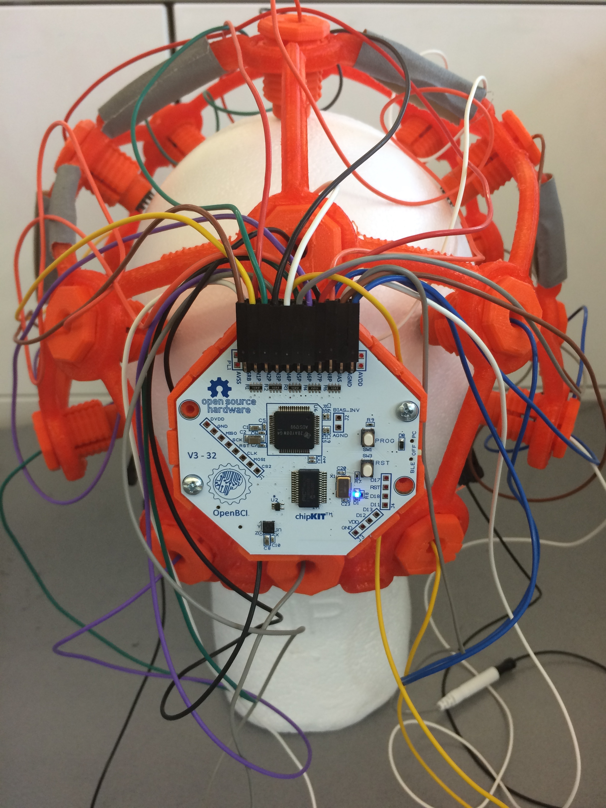
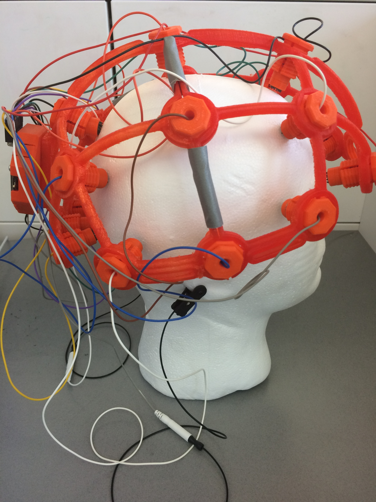

   
Overview
I am currently trying to detect the EEG pattern created by closing ones eyes for a period ranging from 2-4 second. When this occurs, a signal will be sent to an external camera to take a picture.